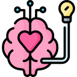
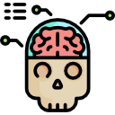
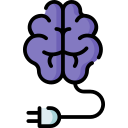
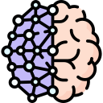

Campo interdisciplinario que estudia la relación entre la mente, el cerebro y la cognición, utilizando métodos de la neurociencia y la psicología cognitiva.
Corteza Cerebral

Capa externa del cerebro compuesta por surcos y circunvoluciones, donde se llevan a cabo funciones cognitivas superiores como el pensamiento.
Atención Selectiva
Capacidad para concentrarse en una tarea o estímulo específico mientras se ignoran otros estímulos irrelevantes.
Imágenes por Resonancia Magnética Funcional
Técnica de neuroimagen que permite medir la actividad cerebral al detectar cambios en el flujo sanguíneo relacionados con la función cerebral.
Esquizofrenia

Trastorno psiquiátrico caracterizado por alteraciones en la percepción, el pensamiento y la conducta, posiblemente relacionado con disfunciones en la comunicación neuronal.
Plasticidad Cerebral

Capacidad del cerebro para reorganizarse estructural y funcionalmente en respuesta a la experiencia y al aprendizaje a lo largo de la vida.
Michael Gazzaniga
Neurocientífico conocido por sus investigaciones sobre la lateralización cerebral y las funciones cognitivas del hemisferio cerebral izquierdo y derecho.
Electroencefalografía

Técnica de neuroimagen que registra la actividad eléctrica del cerebro mediante electrodos colocados en el cuero cabelludo, utilizada para estudiar la actividad cerebral en tiempo real.